version 1.0 - Last update 0.1.2021 (P. Fromm)
This help documents describes the setup and use of the RTEGen Light System. Structure of the Help document:
RTEGen is a Python application, which means you must install Python v3.7 or higher on your computer and add the installation location to your path variable.
Open a CMD or Powershell window and start python (simply type python and hit enter). Check theat the correct version is opened. Leave the Python console by hitting CTRL-Z.
In the next step, the additional packages for the GUI and the generator need to be installed.
Now it's time for a first test run. Execute the file run.bat in the folder gui and the GUI program should open.
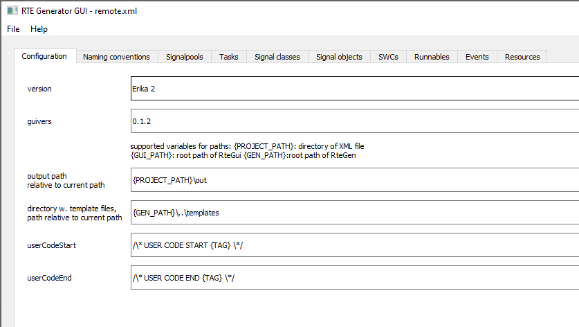
In order to understand the program, we will create a simple application in this tutorial, which will guide you step by step through the process. The sample project file used for this tutorial as well as the generated sources are stored in the help folder under remote. The complete project code can be found as PSOC project in the folder project.
In our sample application, we are creating an embedded remote control. The remote control will read data from different ports and translate this data into a UART protocol, which is send out via a Zigbee module. In addition, incoming protocols are being parsed and the payload is translated into events for a state machine implementation. And last but not least certain data is shown on a small TFT display.
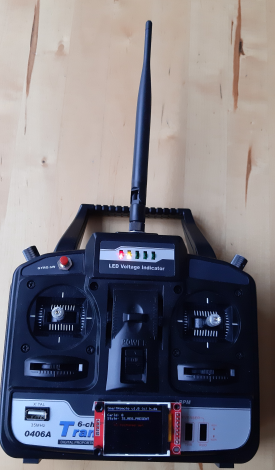
The high level design of the system is shown in the diagram below. We have 3 software components:
Please note the signals between the components.
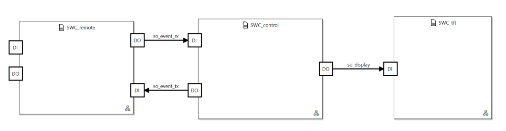
Zooming into the component SWC_remote, we wamt to implement the following signal flow:
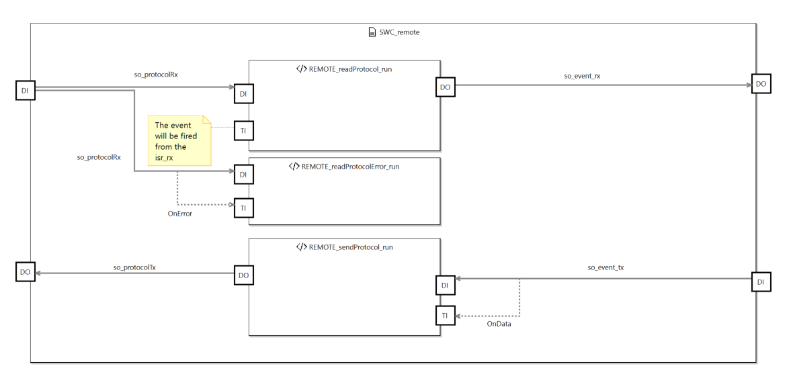
Looking at the more complex SWC_control structure, we find 2 runnables
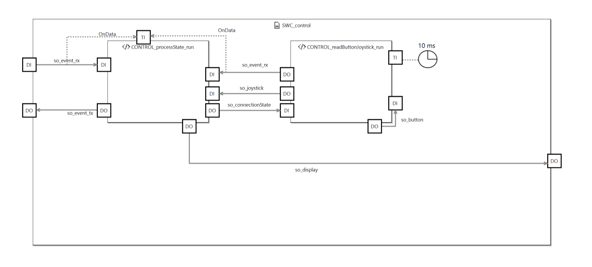
The final runnable SWC_tft again is pretty simple - the signal received from the central state machine will be shown on the display, whenever this signal is being updated.
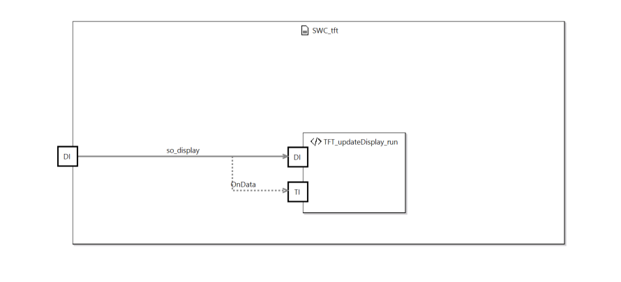
The file menu allows you to load and save your project file. Furthermore the generator is started from this menu. The Help menu opens this help document.
For entering the data into the tool, you more or less fowllow the tabs from left to right. On the configuration tab, you typically will only modify the output path, if required.
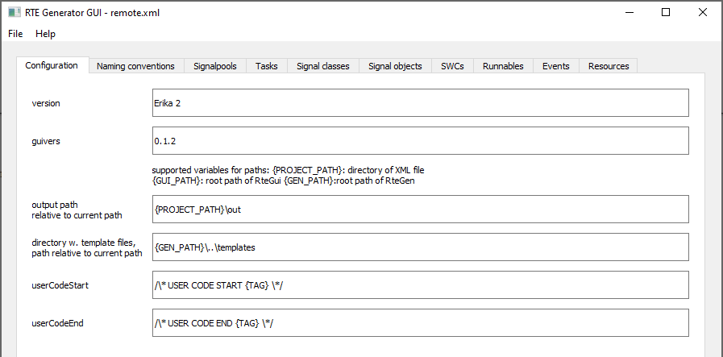
The same is true for the naming convention tab. The following naming conventions have proven to be a good choice when it comes to code readability.
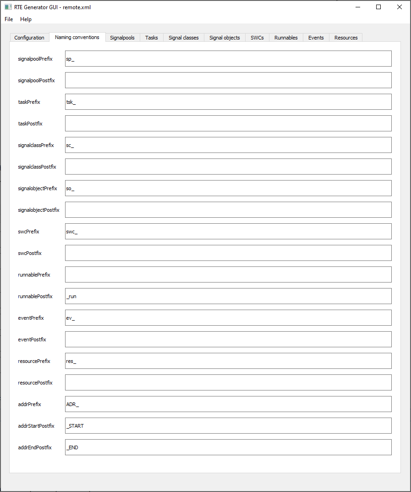
The first project related and more interesting tab is the signal pool. Signals pools can be used to map signals into specific regions, which are protected by the MPU. A typical use case would be the implementation of 2 or more safety functions, using different signals. To ensure freedom from interferance, these signals can be placed into separate pools, which are protected by the MPU. Depending on the OS capabilities, the runnables using the signals also must be placed in different tasks.
As the PSOC does not have a MPU, we only have one signal pool sp_common, containing all signals.
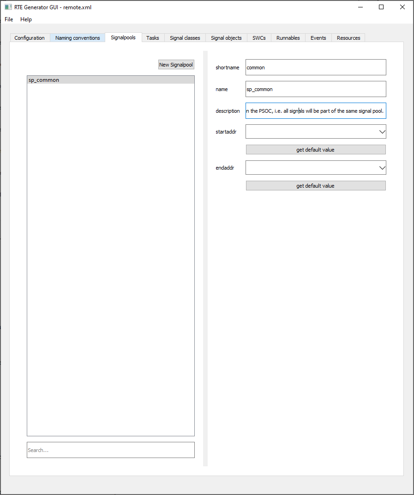
In the tab tasks, the tasks which will be used to execute the runnables will be defined.
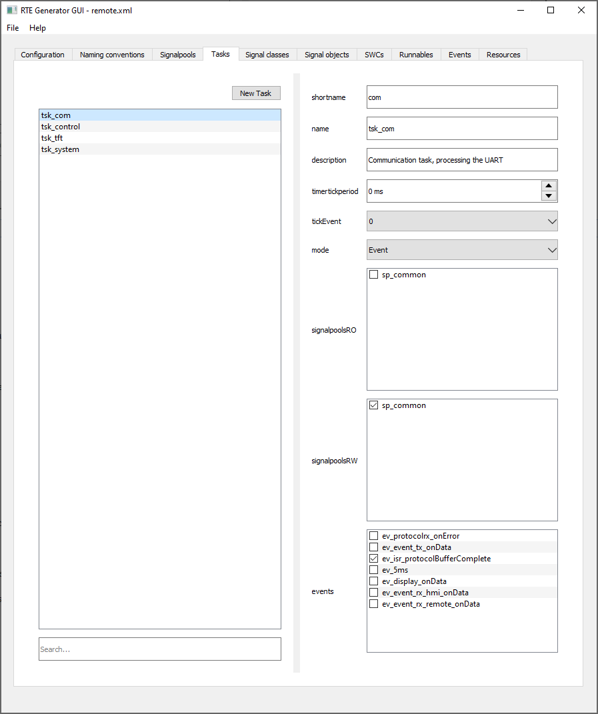
For Erika tasks, please consider the following:
In the tab signal classes, the interfaces of the ports / data types required for signal objects are being defined. Please note, that the generator will create an empty structure / enum / typedef for every class. The content is added and maintained in the generated file directly.
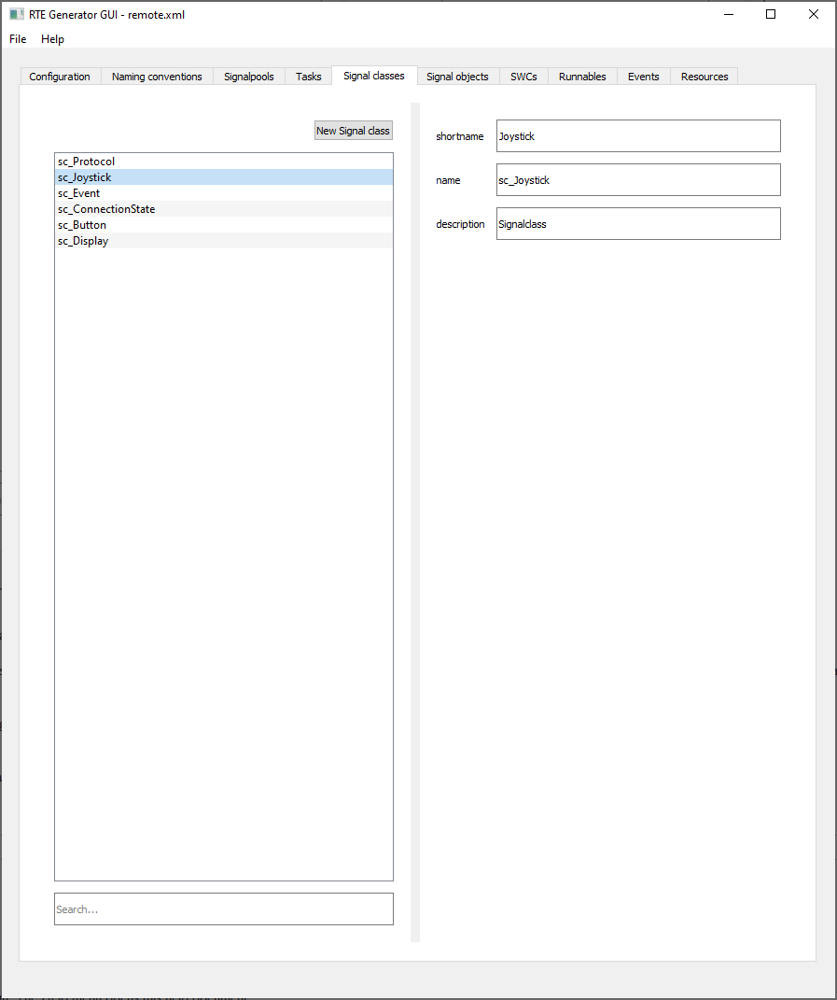
In the tab signal objects, we create the individual data objects and configure the system behaviour in case of data changes.
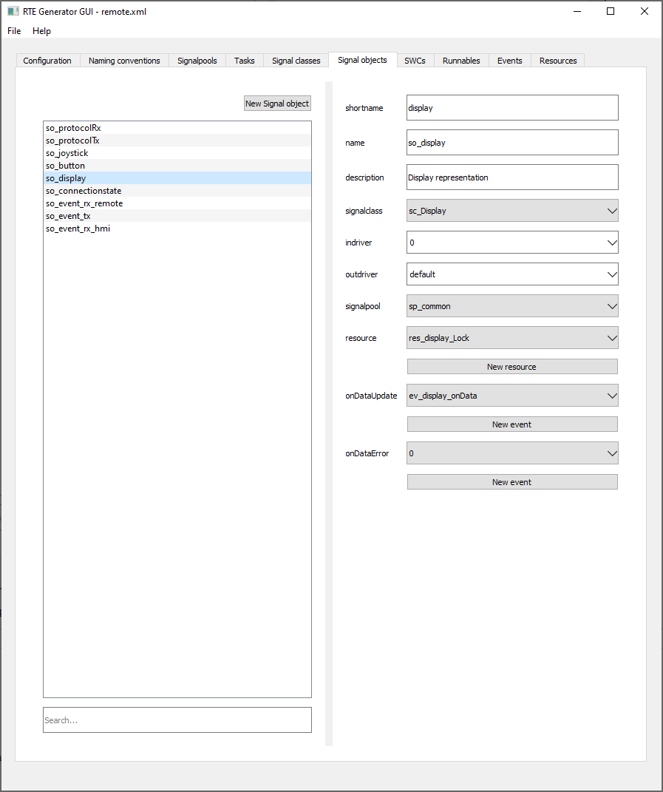
In the tab SWC's, we define the static structure of the system.
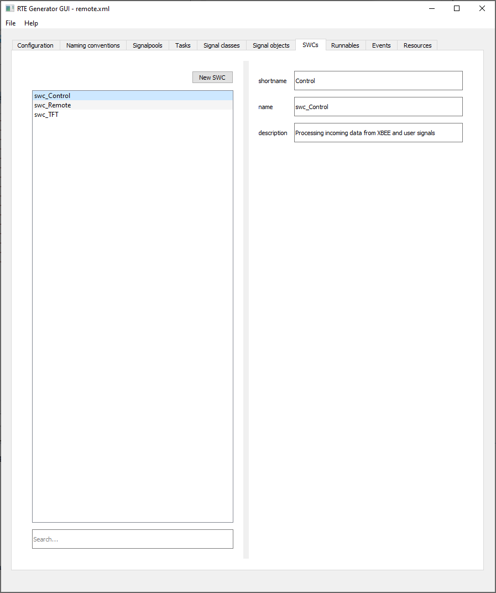
The static structure then is refined on the Runnable level.
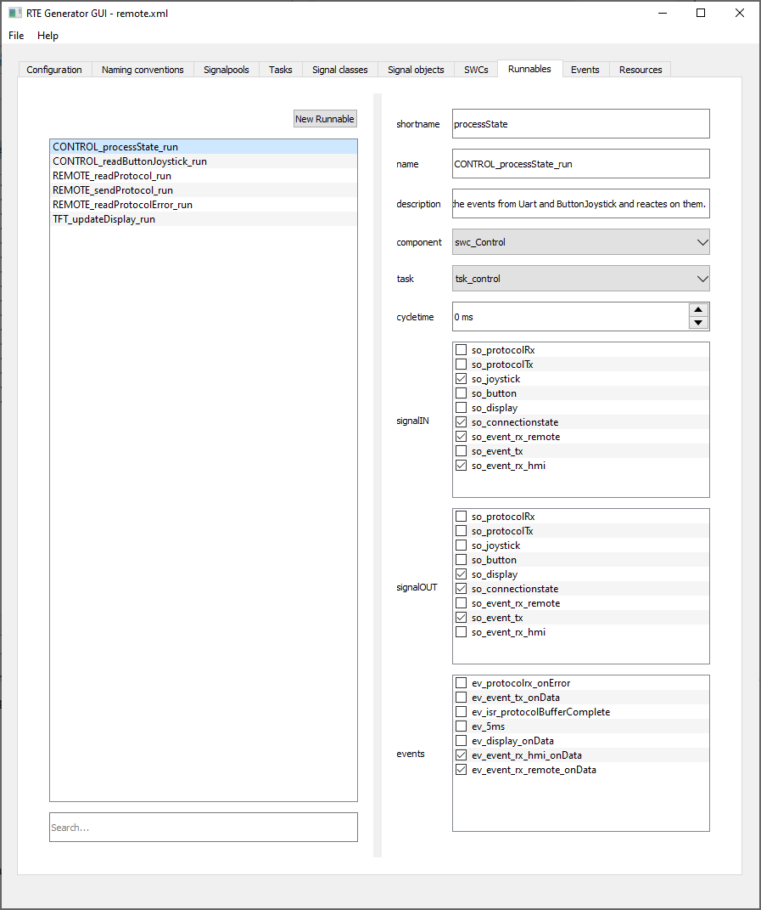
The event tab contains the list of events.
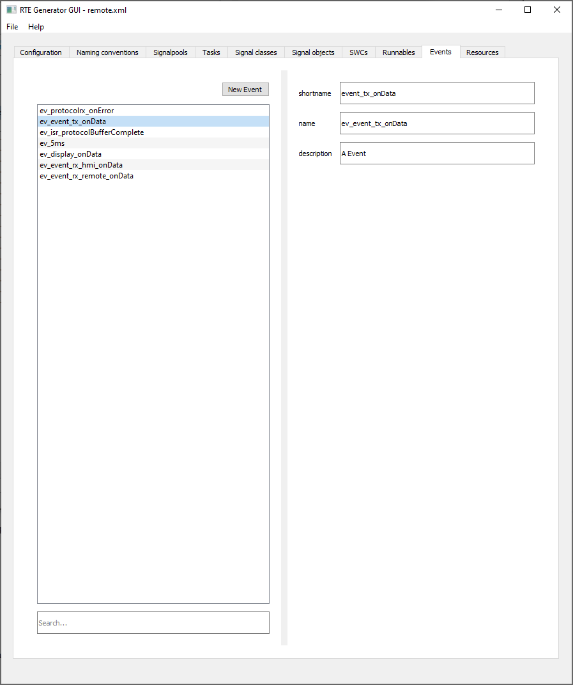
Like the events, the ressources typically are created by pressing the button "New Ressource" in the signal object tab.
Please note: For the ressources, we have to add a stub in the file rte_types.h.
If ressources are required:
/** * In case no ressources are required in the OS, the Resource Type Definition is missing. * So we create a stub here. Must be commented out if we have real resources. **/ // typedef uint32_t ResourceType;
If no ressources are required, we have to uncomment the type definition:
/** * In case no ressources are required in the OS, the Resource Type Definition is missing. * So we create a stub here. Must be commented out if we have real resources. **/ typedef uint32_t ResourceType;
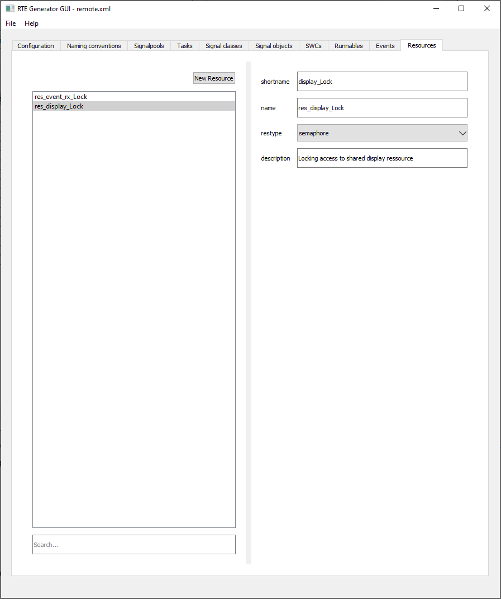
The generator is an own tool, which can be invoked via the file menu of the GUI.
After running the generator, a command window should show up.
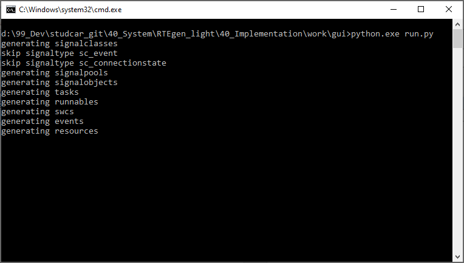
The output location has been set in the configuration tab of the GUI. The recommended structure inside a code workspace looks as follows:
source\ source\asw (application software modules, tasks, SWC's) source\bsw (application software basic driver modules) source\rte (source code for the runtime environment, signals)
Especially if you use the generator for the first time, you might want to generate the code not directly into the code workspace, but into another location (in the example below the folder model) to avoid uncontrolled overwriting of your code
model\ (location of the generator XML file) model\out (location for the generated code, rte.h, rte.c, rte_types.h) model\out\asw (generated software components and tasks) model\out\rte (generated signals)
The subfolder names (asw, rte,..) are defined in the code generation templates. Use a tool like BeyondCompare to merge the generated code with your own code. Alternatively you may of course generate the code directly into you real code folder.
Please note:
User Code sections look like this:
/* USER CODE START TASK_TFT_USERDEFINITIONS */ /* USER CODE END TASK_TFT_USERDEFINITIONS */
The first compilation will create lot's of compiler errors. The reason is, that the internal structure of the signals as well as driver calls have to be added to your code. This needs to be done in the _type.x|.h files.
The _type.h files contain the definition of your class data type. The most relevant part is the following section:
typedef
/* USER CODE START SC_BUTTON_SIGNALDATADEFINITION */
struct
{
#error "Provide your data structure"
}
/* USER CODE END SC_BUTTON_SIGNALDATADEFINITION */
SC_BUTTON_data_t;
/* USER CODE START InitSC_BUTTON */
#error "Provide a sensible init value"
#define SC_BUTTON_INIT_DATA ((SC_BUTTON_data_t){})
/* USER CODE END InitSC_BUTTON */
Check the section containing #error directives. Here, you must add yopur code. You may use structs, enums or simple typedefs to in-built types to define the signal structure.
In case a in- or outdriver is defined, an additional _type.c file is created. In this function, you will call the peripheral driver and check for a valid value.
/**
* Default IN driver API
*/
inline RC_t SC_BUTTON_driverIn(SC_BUTTON_data_t *const data)
{
/* USER CODE START driverInSC_BUTTON */
#error "Add your code here"
//Read data from the MCAL driver
//Scale it to the application type
return RC_SUCCESS;
/* USER CODE END driverInSC_BUTTON */
}
Especially the scaler section provides lot's of flexibility and it is up to you to decide, if you want to place application code in this section or inside the runnable itself. As a rule of thumb, any application code related to the validity of the signal should be placed here, wereas "logical" code working with the signal belongs in the runnable.
Inside the runnables, use the provided API's of the signals to access the data. Typically you will use
Check the file sp_<your signalpool> for declarations of the signals objects. All API's follow an object oriented approach, i.e. the signal object is passed as a first parameter.
/*
* component: swc_Remote
* cycletime: 100
* description: Send protocol trhough XBEE
* events: ev_event_tx_onData
* name: REMOTE_sendProtocol_run
* shortname: sendProtocol
* signalIN: so_connectionstate|so_event_tx
* signalOUT: so_protocolTx
* task: tsk_com
*/
void REMOTE_sendProtocol_run(RTE_event ev){
/* USER CODE START REMOTE_sendProtocol_run */
//Read in internal message
SC_EVENT_data_t event = SC_EVENT_INIT_DATA;
event = RTE_SC_EVENT_get(&SO_EVENT_TX_signal);
//We need the state for special receiver id treatment in case of present protocol
SC_CONNECTIONSTATE_data_t state = SC_CONNECTIONSTATE_INIT_DATA;
state = RTE_SC_CONNECTIONSTATE_get(&SO_CONNECTIONSTATE_signal);
//Do something with the data
RTE_SC_PROTOCOL_set(&SO_PROTOCOLTX_signal, prot);
RTE_SC_PROTOCOL_pushPort(&SO_PROTOCOLTX_signal);
/* USER CODE END REMOTE_sendProtocol_run */
}
Last but not least you will have to configure your RTOS by declaring all required tasks, alarms, events and ressources. It is recommended to copy and paste the names from the GUI into the RTOS configuration.
The template generator is based on the Jinja2 generator framework and beautifulsoup4. Check the following links for additional information:
Typically you only need to modify files stored in the template folder. The name of the file represents the artifact it is generating. cbase.c and h_base.h contain some common generator patterns.
In the file RTEgen.py, you will find a couple of preprocess functions, which are performing operations on the stored XML data, e.g. filtering the data and similar.
The folder \gui\sources\uifiles\ contains XML files, which can be edited with the Python QT Designer (Python\Lib\site-packages\PySide2\designer.exe). Use gui\makeUI.py to create the python GUI framework.